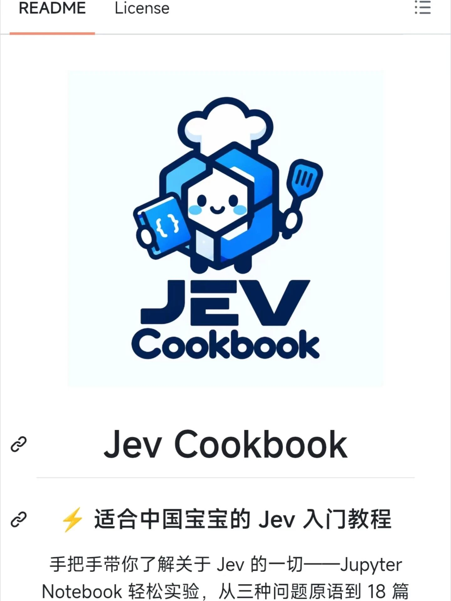

传统 LLM 要“生成文本→解析回决策”，慢、贵、易碎。Jev（TypeSafe 的 System One 模型）换思路：只做判断，不写文本——你给「状态 + 类型化问题」，它直接返回带概率和置信度的结构化答案。
Choice 从选项里选一个，返回选项+概率+置信度。
Score 按量规打分，返回分数+概率。
Noul 这句话为真吗，返回 0~1 真值。
分享一个jev的教程包含11 章可运行 Notebook：原语入门 → 架构模式（扇出/门控/路由）→ 18 篇实战配方 → 语音 3D 智能家居 → Laya vs Jev 四维评测 → RLCD 微调开源模型 Laya → Pi/DSH Agent 集成
零 API Key 也能跑离线示例，配 Key 后同一套代码直连真实模型。
适合谁会 Python + Jupyter，想从“调模型”转向“搭判断驱动系统”的开发者/学生。
datawhalechina/jev-cookbook
#howto入门codex #榨干软件howto #大模型 #深度学习 #算法 #AI人工智能 #人工智能发展 #AI工具
